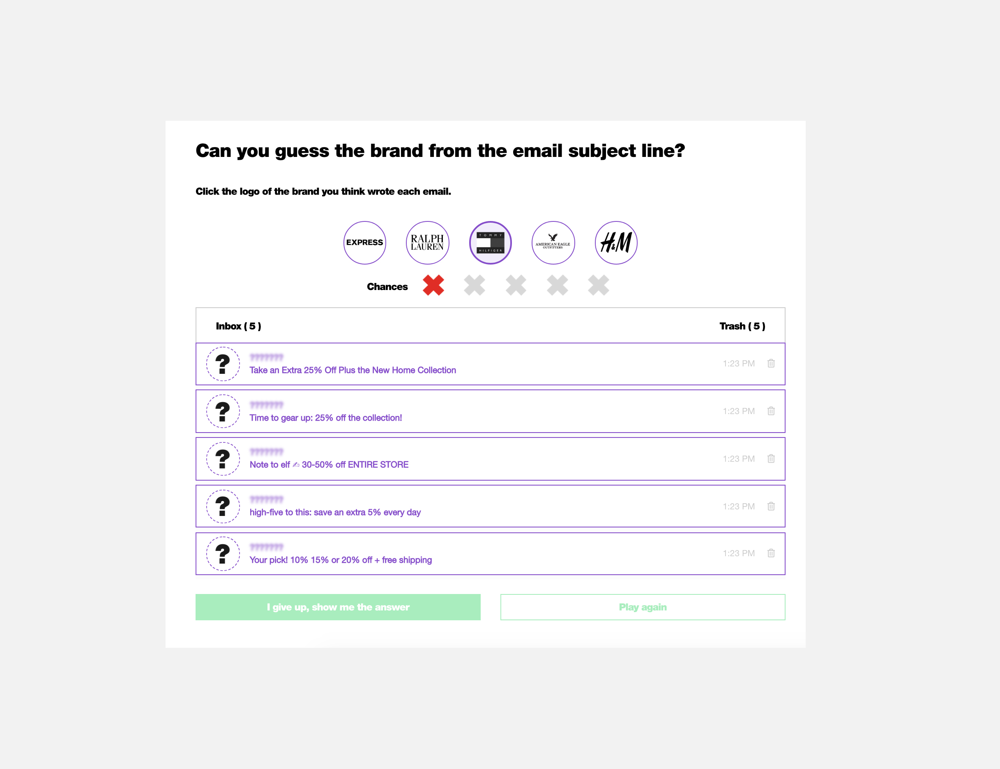
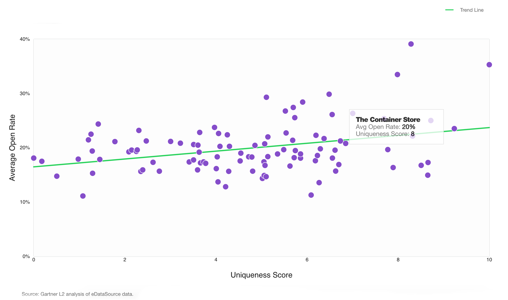
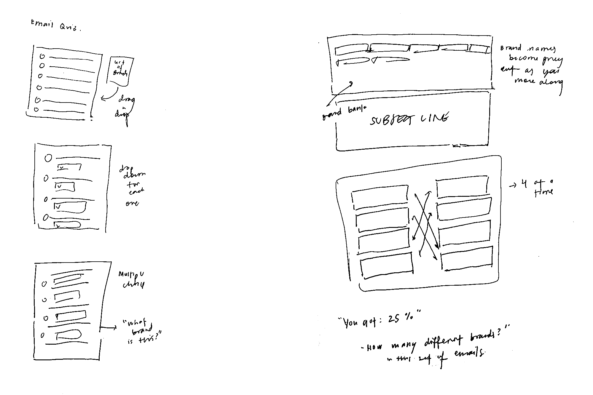
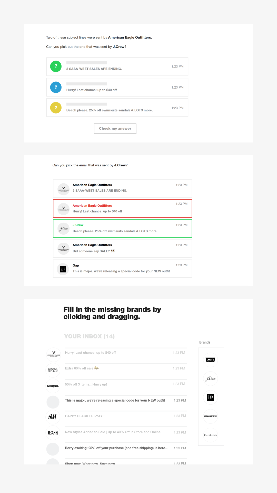
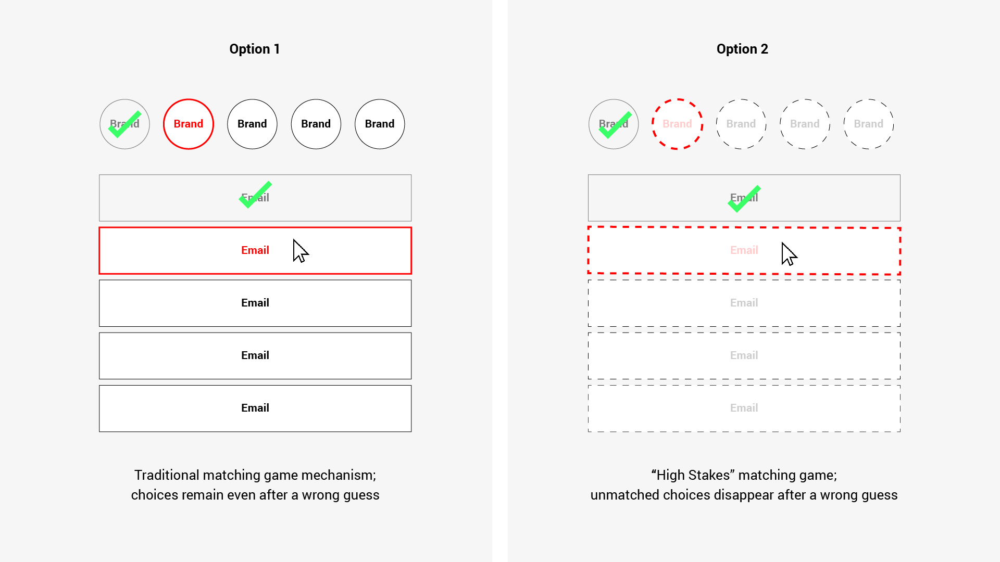
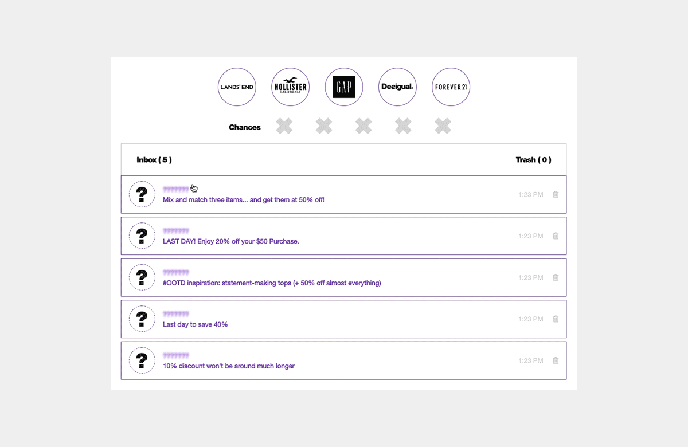

Minh-Anh Nguyen

A quiz feature on Gartner L2’s blog that uses a matching game conceit to illustrate how specialty retail brands fail to create unique value in their email subject lines.
Wright Rickman (development)
Julia Kim (development)
Ryyan Chacra (research and methodology)
Design, user testing
This project was conceived when one of my colleagues came to me with analysis that they had conducted about email content. We had an extensive collection of email campaigns and analysis that concluded that more generic subject lines are opened less frequently than more unique ones. So, what if we asked readers of the L2 blog to try matching brands to subject lines, then revealed the open rates of the subject lines as a way to demonstrate these findings?

The data that inspired this project.
Initially, a matching game seemed to us like a clear, concise way to demonstrate this insight: the subject lines that clients had more trouble matching would be the ones that were less successful as email campaigns.
Yet, when I began work on the prototype, I realized that the idea had an issue—a good portion of the subject lines in our data set didn’t demonstrate that more unique subject lines are opened more frequently; in fact, many of them could be evidence to the opposite. We did not want to have to cherry pick our data set and imply that the correlation is stronger than it actually is.

Rough conceptual sketches after we scaled back the goal of the quiz.
Our team decided to scale back the goal of the quiz: we decided to have the quiz simply demonstrate that subject lines are generic. The game would still center around users matching email subject lines to brands, but revealing the open rates of the subject lines would no longer play a central role. Connecting genericness to open rates would be done in explanatory text, instead.

Several different concepts for demonstrating generic subject lines: 1) comparing two brands to one another, 2) picking one brand from a lineup of anonymous subject lines, and 3) a drag-and-drop matching game.
The first round of prototypes proved to hold another set of challenges: how do you communicate to users that that they are meant to fail? None of the concepts so far addressed this issue in a satisfying way.
We came up with two new concepts, both being variations on the traditional “card flip” matching games. My team built two bare-bones, but functioning prototypes, to test with users.

The game mechanisms we tested.
Users described Option 1 as being more “educational”—they felt there was an “aha” moment when they were able to match a brand to a subject line successfully. Option 2, on the other hand, was frustrating—it felt impossible to finish.
We knew that the frustration of Option 2 was key to the learning experience. What we didn’t want were the “aha” moments of Option 1, as these moments were supposed to be the exception, not the norm.
In response to the feedback, we made adjustments to the UI and the game mechanism in Version B, adding “lives”, animations, and an on-boarding product
You can view the live version
here.

The final game, animations and all.
Animations can play a big role in how UI is understood. In the final product, we used animations to give cues as to how the game worked where static visuals could not.
Inquire into what exactly is being communicated. Deciding to narrow the scope of this project in the early stages involved much dialogue and inquiry between my team and my colleague who created the research. It was important to keep in mind the value of a blog quiz as an dynamic medium for our audience: what part of the research is most essential for Gartner L2’s audience to engage with through interactivity?
Put more emphasis on what I’m communicating to users, rather than what users find easiest. It was important for us to first listen to the feedback users gave us, then to use the goal that we outlined as a measuring stick to sift through the feedback and find where we were failing.